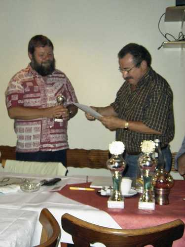
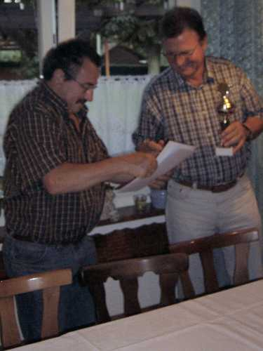
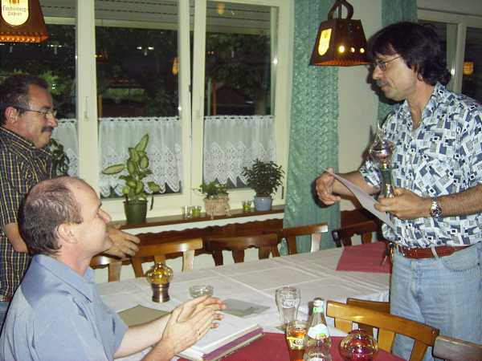
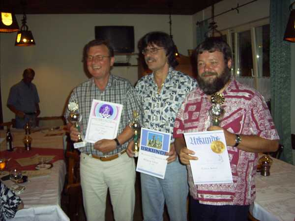
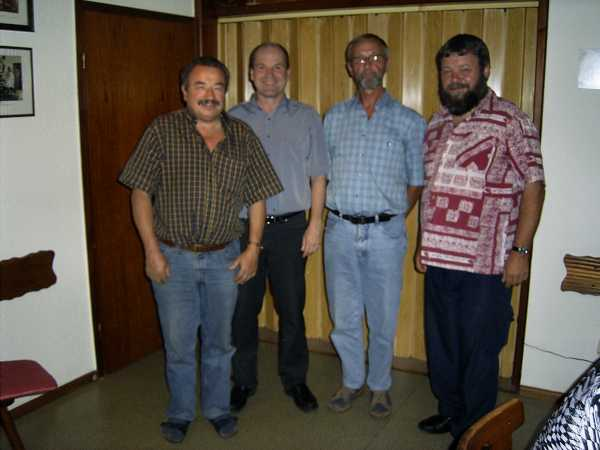
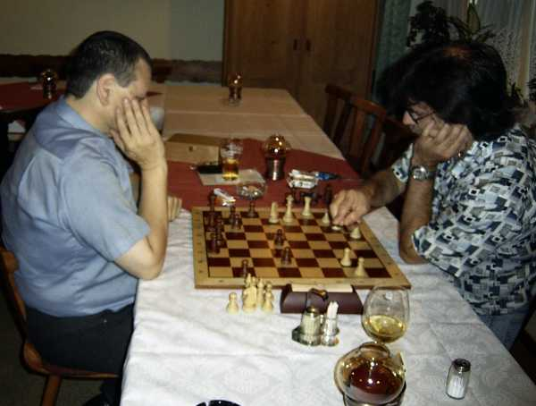
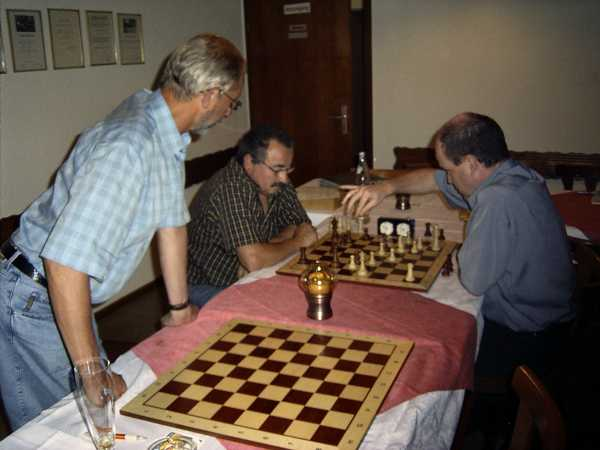

Andächtig lauschende Zuhörer bei der Jahreshauptversammlung
rechts im Bild: Bürgermeister Roland Waßmer

Siegerehrung Vereinsmeisterschaft:
Elmar Kohlhöfer gratuliert Roland Bahner zum 3. Platz

Josef Jurgetz wurde zweiter.

Applaus für den neuen Vereinsmeister Wolfgang Scheina

Unser Vereinsmeister 2005

Gruppenbild der drei Sieger

Der neu gewählte alte Vorstand:
Elmar Kohlhöfer, Bernhard Bürgin, Heinz Meyer, Roland Bahner
(nicht im Bild: Siegfried Korb)

Im Anschluss an den offiziellen Teil
wurde natürlich wieder heftigst gefidelt...

Und hier der Presseartikel aus dem Südkurier vom 7.7.05: